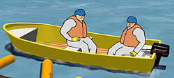

PERSONLIG VERNEUTSTYR
Ved oljevernaksjoner skal alt operativt personell benytte verne- og sikkerhetsutstyr.
Dette skal bestå av minimum følgende utstyr (gjelder for personell både i strandsone og i båt):
- Hjelm
- Hansker
- Kjeledress / Overtrekksdress
- Regntøy
- Støvler / vernestøvler
- Vernebriller
- Godkjent redningsvest

Huskeliste
Helse, miljø og sikkerhet
Helse, miljø og sikkerhet
Er aksjonen organisert? Er det etablert en fungerende ledelse?
Er jeg beskyttet? Har jeg nødvendig og godkjent verneutstyr?
Har jeg godkjent redningsvest?
Er jeg kledd riktig, er jeg tørr og varm?
Er det opprettet kommunikasjon mellom lag og aksjonsledelse?
Er førstehjelps- og brannslukningsutstyr tilgjengelig?
Er det dårlig sikt, trenger vi ekstra lyskilder?
Temperatur, er det for kaldt, fare for ising?
Er det farlig glatt i arbeidssonen?
Er det strøm i sjøen, kan småbåter arbeide sikkert?
Er det for mye bølger?
Er det for mye vind?
Er båten korrekt utstyrt?
Har vi riktig utstyr til jobben som skal gjøres?
Har vi nok utstyr til jobben som skal gjøres?
Er terrenget oversiktlig?
Er jeg sliten eller trøtt? Husk regelmessige pauser.
Er jeg sulten/tørst?
Jobb aldri alene!